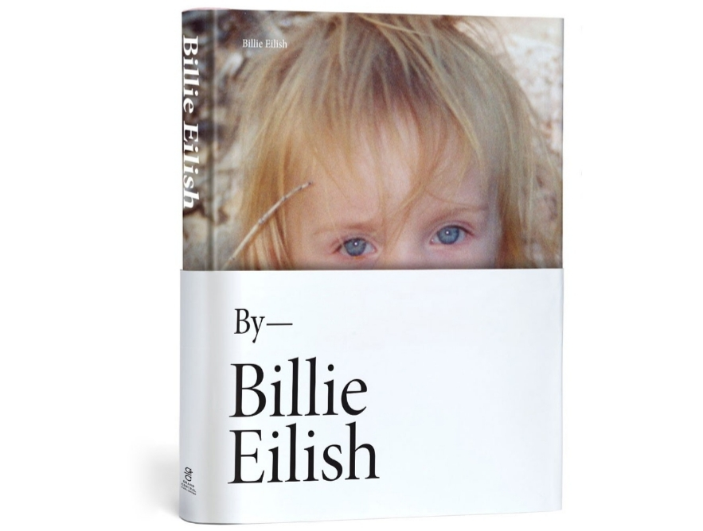

BILLIE EILISH:
THE WORLD'S A LITTLE BLURRY
DOCUMENTÁRIO:
A data de estreia está marcada para o dia 26 de fevereiro de 2021 na Apple TV.
Este documentário traz um olhar profundamente íntimo sobre a extraordinária Billie Eilish. O premiado cineasta R.J. Cutler acompanha a artista em turnê, no palco e em casa com sua família durante a gravação do álbum que mudou a sua vida.
No trailer recém-lançado podemos ver cenas como o momento em que Billie tira sua carteira de motorista, gravações caseiras de sua infância, momentos antes e depois de shows e momentos com sua família e fãs. É esperada a presença frequente de seu irmão e produtor, Finneas, além de maiores detalhes sobre a criação do álbum 'When We All Fall Asleep, Where Do We Go?', lançado em 2019.
A data de estreia está marcada para o dia 26 de fevereiro de 2021 na Apple TV.
Este documentário traz um olhar profundamente íntimo sobre a extraordinária Billie Eilish. O premiado cineasta R.J. Cutler acompanha a artista em turnê, no palco e em casa com sua família durante a gravação do álbum que mudou a sua vida.
No trailer recém-lançado podemos ver cenas como o momento em que Billie tira sua carteira de motorista, gravações caseiras de sua infância, momentos antes e depois de shows e momentos com sua família e fãs. É esperada a presença frequente de seu irmão e produtor, Finneas, além de maiores detalhes sobre a criação do álbum 'When We All Fall Asleep, Where Do We Go?', lançado em 2019.
"BILLIE EILISH" - BY BILLIE EILISH
O lançamento será realizado no dia 11 e Maio de 2021.
O álbum fotográfico mostrará fotos sobre a vida de Billie desde sua infância e o audiobook, é uma gravação para acompanhar algumas fotos. A data de lançamento será no dia 11 de Março de 2021. Neste livro, ilustrado com fotografias coloridas de momentos icónicos, vais descobrir tudo sobre como é que a Billie escreve as suas canções, lida com a popularidade e desenvolve o seu estilo inimitável! Explora os bastidores e o palco da vida de Billie Eilish e segue o seu lema:
«Se eu consegui, tudo é possível!»
O álbum fotográfico mostrará fotos sobre a vida de Billie desde sua infância e o audiobook, é uma gravação para acompanhar algumas fotos. A data de lançamento será no dia 11 de Março de 2021. Neste livro, ilustrado com fotografias coloridas de momentos icónicos, vais descobrir tudo sobre como é que a Billie escreve as suas canções, lida com a popularidade e desenvolve o seu estilo inimitável! Explora os bastidores e o palco da vida de Billie Eilish e segue o seu lema:
«Se eu consegui, tudo é possível!»
